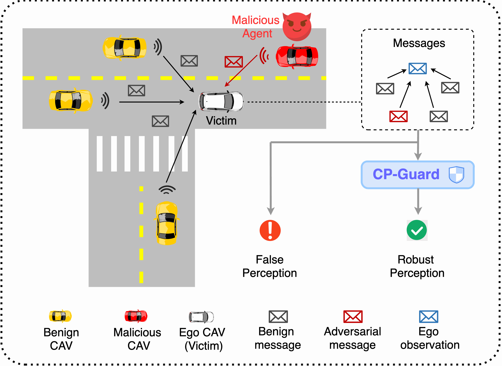

Contents
Abstract
Collaborative Perception (CP) has shown a promising technique for autonomous driving, where multiple connected and autonomous vehicles (CAVs) share their perception information to enhance the overall perception performance and expand the perception range. However, in CP, ego CAV needs to receive messages from its collaborators, which makes it easy to be attacked by malicious agents. For example, a malicious agent can send harmful information to the ego CAV to mislead it.
To address this critical issue, we propose a novel method, CP-Guard, a tailored defense mechanism for CP that can be deployed by each agent to accurately detect and eliminate malicious agents in its collaboration network. Our key idea is to enable CP to reach a consensus rather than a conflict against the ego CAV's perception results. Based on this idea, we first develop a probability-agnostic sample consensus (PASAC) method to effectively sample a subset of the collaborators and verify the consensus without prior probabilities of malicious agents.
Furthermore, we define a collaborative consistency loss (CCLoss) to capture the discrepancy between the ego CAV and its collaborators, which is used as a verification criterion for consensus. Finally, we conduct extensive experiments in collaborative bird's eye view (BEV) tasks and our results demonstrate the effectiveness of our CP-Guard.
Problem Illustration

Our Approach
Probability-Agnostic Sample Consensus (PASAC)
A novel method to effectively sample a subset of collaborators and verify consensus without requiring prior probabilities of malicious agents. This approach is robust to unknown attack patterns and doesn't rely on assumptions about the distribution of malicious agents.
Collaborative Consistency Loss (CCLoss)
A carefully designed loss function that captures the discrepancy between the ego CAV and its collaborators, serving as a verification criterion for consensus. This metric enables accurate identification of benign vs. malicious agents.
Malicious Agent Detection
If a collaborator's collaborative consistency loss exceeds a predefined threshold, it is considered benign; otherwise, it is identified as malicious and eliminated from the network. This process ensures robust defense while maintaining system performance.
Key Contributions
- We analyze the vulnerabilities of CP against malicious agents and develop a novel framework for robust collaborative BEV perception, CP-Guard, which can defend against attacks and eliminate malicious agents from the local collaboration network.
- We establish a probability-agnostic sample consensus (PASAC) method to effectively sample a subset of the collaborators and verify the consensus without prior probabilities of malicious agents.
- We conduct extensive experiments on collaborative BEV tasks and demonstrate the effectiveness of our CP-Guard and its generalization to different attacks.